MacsLink
Apps for deck officers · made at sea
Open MacsLink Suite and choose a module on the home page. Below: the full MACS3 round trip for DG, then a quick start for Ballast Management.
One-time setup: download MacsLink Suite. On the home page, click Activează Licența (activate licence) and paste your key (GW-LUNA30-… for the 30-day license). The HWID is read from your PC automatically and the licence applies to both modules.
Want the free trial first? Email your HWID to macslink.support@gmail.com. The quickest way: click 🎁 Trial 10 Zile in the licence bar on the home page — it opens a pre-filled email with your HWID. You can also see the HWID in the Activează Licența window.
MacsLink DG sits between MACS3 and your dangerous-goods PDF manifest. You export IMDG cargo from MACS3, reconcile it against the manifest, then merge the verified DG data back into MACS3 — a clean round trip with a full audit at the end.
Open Quick Search, tick IMDG-Cargo, and set POL / POD if you want to narrow the list to one port. Click Run.
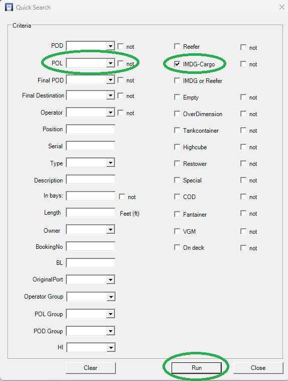
The query returns every container flagged ContainsIMDG, with a count and weight summary at the bottom. Click Save As….
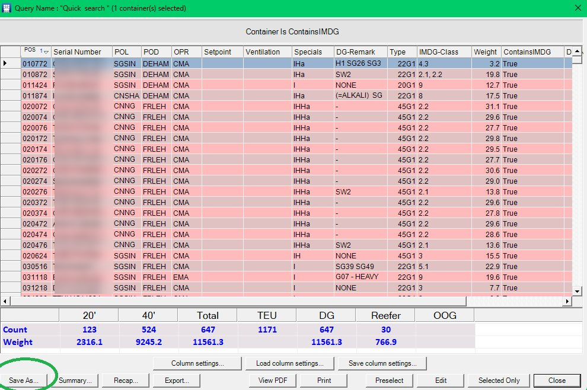
Set Save as type to *.cxml (Cargo file), give it a name (e.g. CNYTN IMDG), and save. This cXML is the cargo plan MacsLink DG will reconcile against.
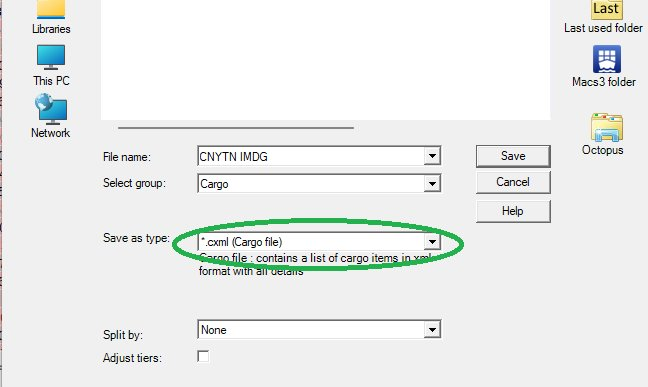
On the Suite home page choose DG Correlation. Click Manifest PDF and select your dangerous-goods PDF (e.g. DG MANIFEST.pdf). The filename appears next to the button.
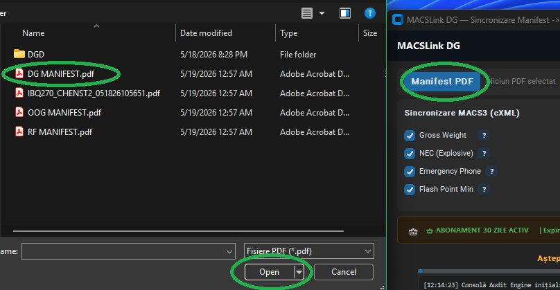
Click cXML Plan and select the file you exported from MACS3 (e.g. IMDG CNYTN.cxml).
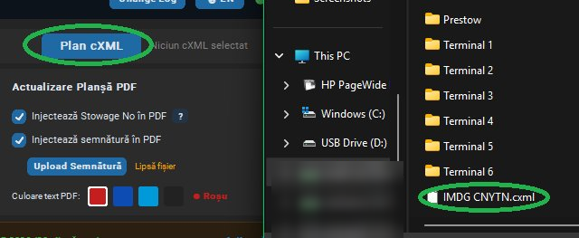
Under MACS3 Synchronization, pick the fields to write back: Gross Weight, NEC (Explosive), Emergency Phone, Flash Point Min.
Under PDF Plan Update, optionally inject the Stowage No and a signature image into the PDF, and pick the annotation text color. Then click Start Dual Correlation.
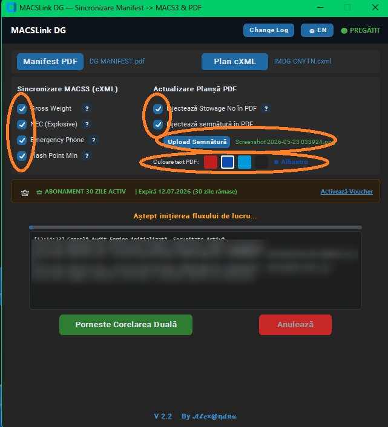
Name the synchronized file (e.g. IMDG CNYTN_Updated.cxml) and save. This is the file that goes back into MACS3.
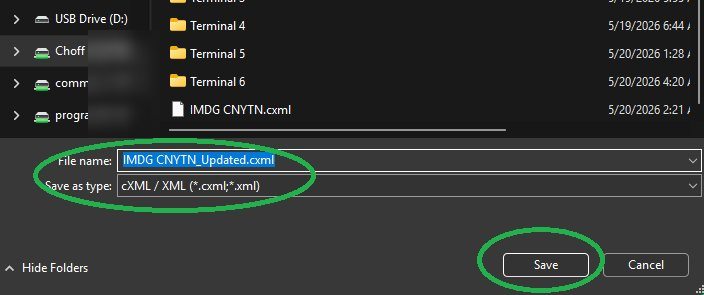
Name the marked-up manifest (e.g. DG MANIFEST_Updated.pdf) and save — your stamped copy with stowage positions and signature.
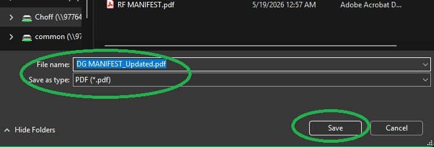
The Logistics Audit report confirms both files were saved and flags any anomalies it found between the PDF and the cXML — for example, a cargo/lot count that doesn't match.
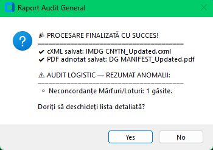
The full report sorts anomalies into categories — Marine Pollutant conflicts, Limited Quantity conflicts, and structural lot discrepancies — so you can resolve any mismatch before merging back.
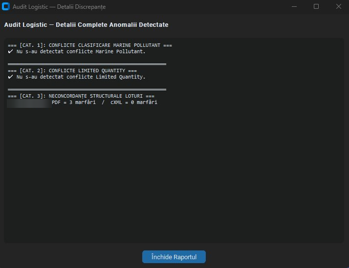
In the Pier view, go to File → Load… and open the …_Updated.cxml produced by MacsLink DG.
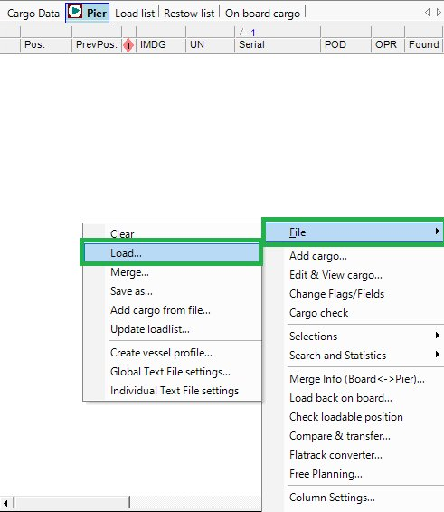
In the dialog, tick Overwrite DG only and click Merge. This updates the dangerous-goods fields without touching the rest of your plan.
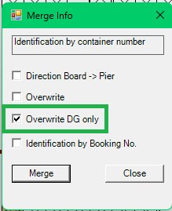
Open the Dangerous goods, All items view: DG-Weight, DG-Explosive Weight, and FlashPointMin are now populated from the manifest. The round trip is complete.
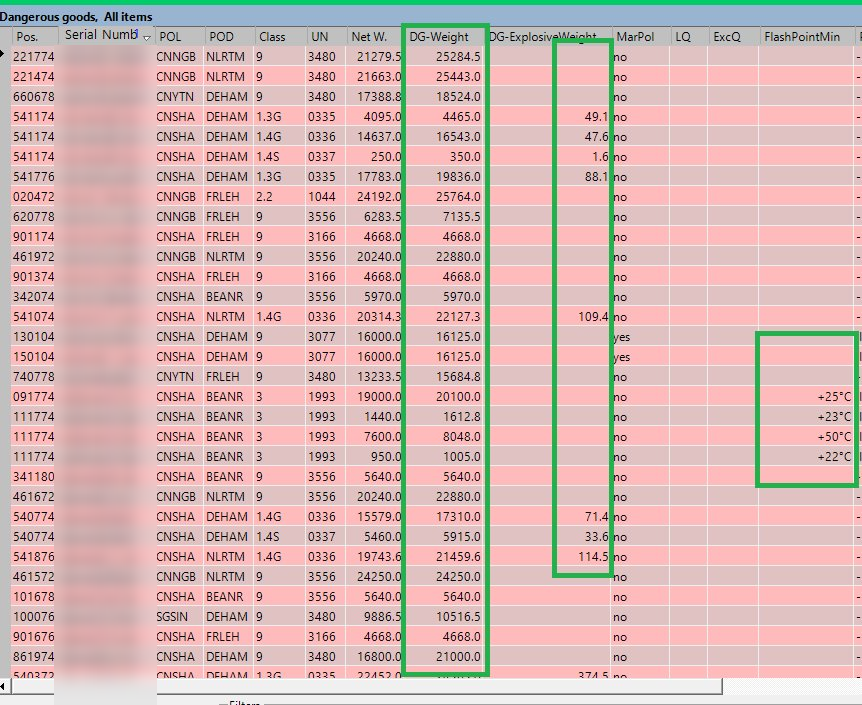
Set the vessel up once; after that, each ballast operation is a drag on the tank plan plus a short form. The log and reports are built from what you record. The Ballast interface is currently in Romanian — button labels below are shown exactly as in the app, with the English meaning in brackets.
On the Suite home page choose Ballast Management. In the setup screen click Încarcă .stb / .tkp / PDF (load) and select the tank file from your loading computer (e.g. tanks.stb) or a tank-plan PDF.
Click Încarcă Excel (.xlsm / .xlsx) and pick your current Tank per tank log. MacsLink reads every tank sheet, its history and its capacity, so you continue exactly where the paper trail stops.
Confirm the 100 % capacity of each tank in the table (missing values are highlighted). Optionally load a screenshot of your stability software's tank view and adjust the detected boxes in the layout editor. Enter the vessel name and click Continuă la planul tancurilor → (continue to tank plan).
On the tank plan, drag sea → tank to ballast, tank → sea to deballast, or tank → tank for a transfer. The operation form opens with date, time and last position pre-filled.
Enter the quantity (or use ½ / Max), choose the type of operation, BWTS status and start/stop port or Lat-Long. For pump-in, density and temperature give salinity automatically; for operations at sea, add minimum distance from shore and depth. Click Înregistrează (record).
Click 📋 (Jurnal) to preview every entry per tank or for the whole vessel. New, not-yet-exported entries are shown in green; ↶ / ↷ (undo / redo) fix any mistake.
Click 💾 (Export Excel) to write the complete Tank per tank log — one sheet per tank, in on-board order — ready to transcribe into or attach to the Ballast Water Record Book.
Open ☰ → 📄 Raport (report), add the port's or company's form once (Word, Excel or fillable PDF), fill in arrival port, agent and master, and generate. Tanks that are empty or below your thresholds are left out automatically.